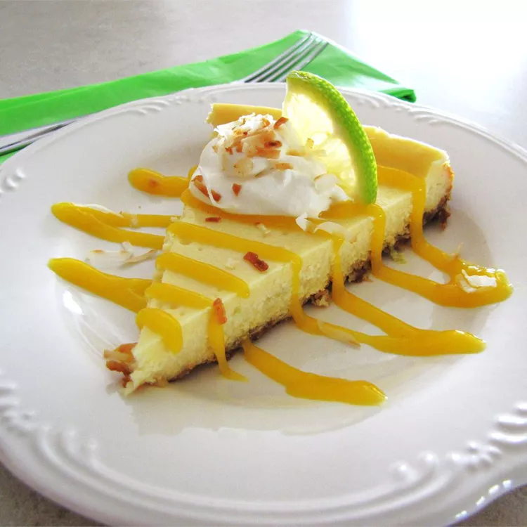

Coconut-Lime Cheesecake with Mango Coulis

Description:
This tropical-inspired mango Key lime cheesecake features a ginger-coconut
crust and two divine layers topped off with a fresh mango coulis. I like
to make coconut cream by adding coconut extract to whipped cream for
topping the cheesecake. Top with a whipped cream dollop and toasted
coconut sprinkle for even more flavor.
Ingredients:
- ¾ cup sweetened flaked coconut
- ¾ cup crushed gingersnap cookies
- 3 tablespoons melted butter
- 2 (8 ounce) packages cream cheese, softened
- 1 (10 ounce) can sweetened condensed milk
- 2 eggs
- 1 tablespoon lime zest
- 2 tablespoons lime juice
- 1 tablespoon coconut extract
- 2 cups cubed fresh mango
- 1 teaspoon white sugar, or more to taste
Steps:
Here is the 11 steps on how to make a Coconut-Lime Cheesecake with Mango
Coulis
-
Preheat the oven to 325 degrees F (165 degrees C). Lightly grease a
9-inch springform pan.
-
Combine coconut, gingersnap cookies, and melted butter in a bowl; mix
until evenly moistened. Press cookie mixture into the bottom and
slightly up the sides of the prepared pan.
-
Bake crust in the preheated oven until browned and set, about 10
minutes. Set aside to cool.
- Reduce oven heat to 300 degrees F (150 degrees C).
-
Beat softened cream cheese in a mixing bowl until smooth. With the
beater set to medium-low, slowly pour condensed milk into the bowl,
mixing only until just blended and stopping to scrape the sides of the
bowl as necessary.
-
Add eggs, one at a time, beating well after each addition; scrape the
sides of the bowl as necessary.
-
Pour about 1/2 of the cream cheese batter into a separate bowl. Stir
lime zest and lime juice into portion in the new bowl; pour batter over
crust in the springform pan, smoothing into an even layer.
-
Stir coconut extract through remaining cream cheese batter; pour over
lime-flavored batter in the springform pan, smoothing into an even
layer.
-
Bake in the preheated oven until top of cheesecake springs back when
gently pressed, about 45 minutes.
-
Turn oven heat off, but leave cheesecake inside with the oven door
slightly ajar until the oven cools completely. Refrigerate until
thoroughly chilled.
-
Prepare mango coulis by puréeing mango with sugar in a blender until
smooth. If too thick, add 1 teaspoon water at a time, using just enough
to make it pourable. Drizzle over cheesecake when plated.